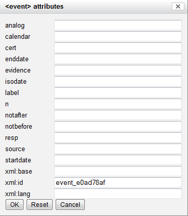

Using the attribute editor
The attribute editor is a tool for advanced users, giving access to certain encoding details otherwise not visible or editable in MerMEId. It lets you add and edit all available attributes according to the XML schema on most of the elements accessible with MerMEId.
- Enter the settings menu by clicking the settings icon
 in the
top right corner.
in the
top right corner. - Enable the attribute editor by checking the "Enable attribute editor" option. Close the settings menu.
- Where available, the attribute editor icon is displayed next to the element it refers to. Click it to show the element's attribute editor.
- The attribute editor lets you manipulate data in a way that may affect or compromise the way MerMEId handles your data. Change attribute values only if you know what you are doing.

The attribute editor may facilitate certain tasks, for instance:
- To use functionality not (yet) supported by MerMEId. For instance, if you wish to link a person's name to a certain authority identifying this person (like the German GND) for disambiguation, you may use the attribute editor to fill in a <persName> or <name> element's authority and authURI attributes.
- When working with relations (e.g. in anthologies or with external sources), you may use the attribute editor to enter the target of the relation instead of using the file or source browser. This will usually be the faster way to enter information, but it requires you to know the file name or ID of the target.
Because not all elements are directly visible or editable in MerMEId – for instance, high-level container elements like <fileDesc> or <mei> – the attribute editor is not available for all elements in use. To access all elements and their attributes, use other tools like a generic XML or text editor.